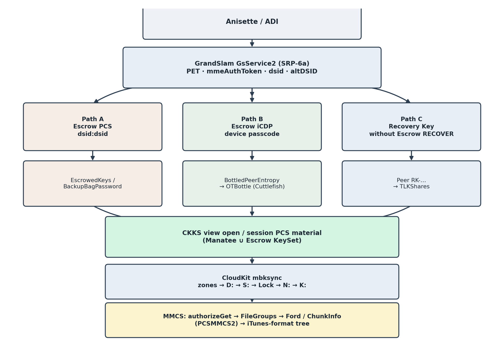
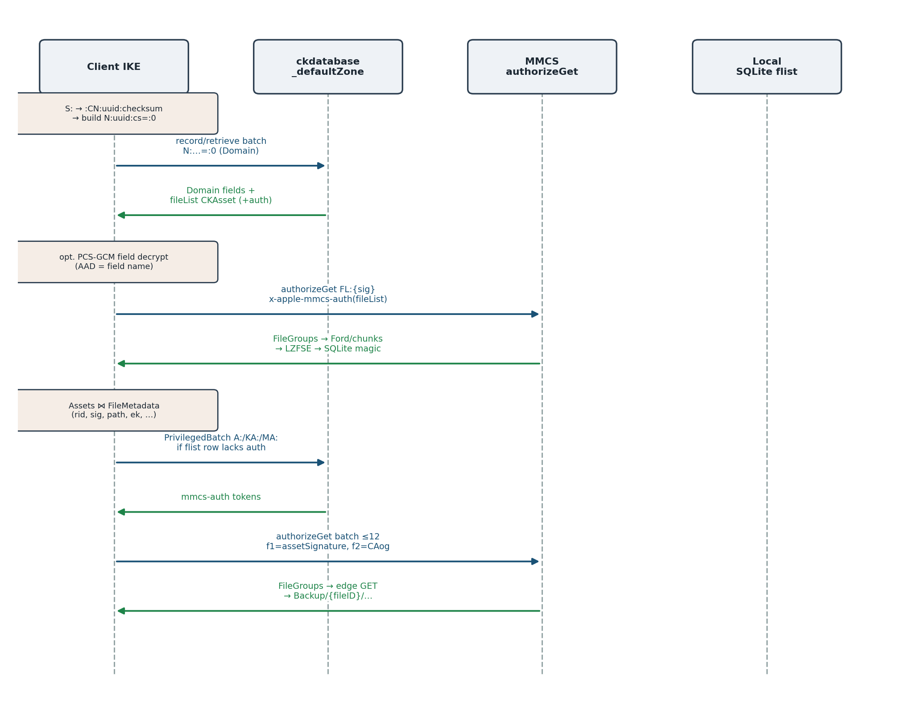

Abstract
Commercial iCloud acquisition tools often fail when iCloud.com is disabled, ADP is enabled, or Lockdown Mode restricts client surfaces. Acquisition then requires composing Apple’s private protocols: GrandSlam / GsService2, EscrowProxy and/or Octagon / Cuttlefish, CKKS views (Manatee / TLKShare), CloudKit mbksync inventory including Domain N: / fileList SQLite, and MMCS / PCSMMCS2 chunk transfer.
This technical note maps those protocols as reconstructed in iCloudKit Extractor (IKE) under authorized laboratory observation (March–November 2026).
Protocol chain
End-to-end path documented in the paper: Anisette/MidService → GrandSlam → recovery paths A/B/C → session PCS → Lock → Domain fileList → authorizeGet → Ford/ChunkInfo → iTunes-format tree.

File lists after Lock
Paths are not inline on CloudKit. Modern restore resolves :CN: → Domain
N:…=:0, downloads each Domain fileList via MMCS, expands SQLite
(Assets ⋈ FileMetadata), then batches per-file authorizeGet.

Get the paper
Camera-ready Typst build, DFRWS/FSI-inspired layout.
Suggested citation
Sconti, G. (2026). From GrandSlam to MMCS: A Description of Modern Apple Private Protocols for Authentication, Escrow/PCS, Octagon/CKKS, and iCloud Device Backup Acquisition (Technical note, v1.11). Gruppo Informatici Forensi / iCloudKit Extractor. https://giordanosconti.github.io/iCloudKitExtractor/whitepaper/ [Replace with Zenodo DOI]